0.7.9
Copyright © 2008 Denemo Project
Table of Contents
Denemo lets you create musical scores. You can type music in using the keyboard or play it in using a microphone. You can edit your music - the display shows you the measures you are working on - and you can playback selected bits to check how it sounds. You can preview and print the score or parts to the highest standards used in the music publishing industry - thanks to the Lilypond typesetting program.
Denemo does not attempt to show the appearance of the finished score, it just shows you enough to enable you to enter the music efficiently. To see the finished score you press Print Preview.
Anonymous Git checkout:
git clone git://git.savannah.gnu.org/denemo.git
Anonymous CVS checkout:
cvs -d:pserver:anonymous@pserver.git.sv.gnu.org:/denemo.git co -d denemo master
Denemo is available from a variety of sources for different distributions. The latest stable release (tar.gz and .deb formats) is available for download from http://download.savannah.gnu.org/releases/denemo/. You can install Denemo from the Debian unstable repositories, using the command apt-get install denemo. Builds for Macintosh are available from the Gnu-Darwin project. The Denemo development branch can be downloaded using anonymous CVS or GIT.
To build Denemo from CVS or a source package, the following dependent packages should be installed first. Remember to install the development packages as well (check your distribution for the specific package name):
![[Note]](images/note.png) | For Debian Users |
|---|---|
Type apt-cache showsrc denemo at a command line to determine what are the package names for Denemo dependencies. Type apt-get build-dep denemo to build the dependent files or use apt-get to install the packages individually by copying and pasting there names to the command line. |
g++ 2.95 or higher
flex 2.5.4a or higher
bison 1.35 or higher
cdbs
gettext
libgtk1.2-dev
libgtk2.0-dev
gtk+ 2
libglib2.0-dev
libxml2
libxml2-dev
LilyPond 2.4
autoconf 2.59 or higher
automake1.7
libaubio
libportaudio
Denemo uses other applications for playback and printing. You may need to install the following applications, and edit the preferences menu to tell Denemo which you want it to use.
C Sound (optional)
A PDF viewer (ghostview, evince etc)
A midi player such as timidity
An image viewer such as EOG
Denemo is available in a variety of formats. The current stable release is available either as source code or in binary format. The Development branch of Denemo is available as a GIT source tree.
Procedure 1. To install from source code:
Open a terminal window.
Change directories to the directory to which you downloaded the Denemo source package.
Uncompress the source package using standard Linux tools (tar and gunzip).
Change directories to the uncompressed directory.
Denemo is usually used via the keyboard or playing in via a musical instrument. The mouse however has its uses. Clicking on the score will select items, and the status bar at the bottom will describe the item clicked. Selections can be made by dragging with the mouse from one note to another. And right-clicking any menu item gets help and the opportunity to set a keybinding for the menu item.

A set of action-based menus can also be shown in addition to the object-based menu shown here. These menus can be used directly or for enquiring/setting keyboard shortcuts for the actions, or getting help on the particular action. The menus can always be torn off for working with particular items (e.g. working with different movements or with measures, dynamics etc.). The View menu selects which menus to show.
The main menu bar has menus for overall control of the program. It contains the following menus:
File
Edit
View
Mode
Playback
Help
Use the menu to perform global operations. The File menu contains the following Menu Items:
| Menu Item | Description |
|---|---|
| New | Create score from scratch. |
| Open | Open an existing Denemo file. |
| Add Staffs | Open an existing Denemo file and append the staffs from the (first) movement of it to the staffs in the current movement. |
| Add Movements | Open an existing Denemo file and append the movements from it to the current score. |
| Open Recent | Open a file recently edited. |
| Open Standard Template | Create score from a stock template. |
| Open from Gallery | Create score from an example in the Gallery. |
| Open Custom Template | Create score from a template you have saved. |
| New Window | Open another instance of Denemo. |
| Open in New Window | Open an existing Denemo file in a new window so that both can be used at once. |
| Save | Save the current file. |
| Save As | Save the current file with a new name. |
| Save Parts | Saves a set of parts (staves) in LilyPond format. |
| Export PDF | Run LilyPond on the current file to create a PDF. |
| Displays the score in a pdf view, from which it can be printed. | |
| Print excerpt | Displays only the selection in image viewer, from which it can be saved. |
| Print Current Part | Displays one part taken from the score in a pdf view, from which it can be printed. |
| Score Wizard | Open a Score Setup Wizard. |
| Close | Close the current file but keep Denemo open. |
| Quit | Close the current file and exit Denemo. |
Use the menu to access common editing commands.
| Menu Item | Description |
|---|---|
| Undo | Undo the pitch and rhythm just added. |
| Redo | Redo the pitch and rhythm just added. |
| Select | Menu items for selecting music in the score. |
| Cut | Copy the selected notation to the clipboard and delete the selection. |
| Copy | Copy the selected notation to the clipboard. |
| Paste | Paste the copied notation at the cursor point. |
| Score Properties | Add header information for titles etc. for score and header information for the current movement. |
| Preferences | Set external programs (LilyPond, PDF viewer etc.), autosave interval etc. |
| Keyboard Setup | Quick settings checkbox – one touch setting of keypresses. Save shortcuts. Extra keyindings for duplicate keybindings only. |
Use the menu to toggle toolbars and palettes used for entering notation with the mouse.
| Menu Item | Description |
|---|---|
| Rhythms and Overlays | Allows custom rhythm patterns and microphone overlay |
| Note and Rest Entry | Notes and rests buttons – the highlighted button is current duration – click a button to enter a note/rest |
| Articulation Palette | A palette of expression marks to apply to notes. |
| Menu of Actions | Menu of all the Denemo commands listed under type of Action |
| Menu of Objects | Menu of all the Denemo commands listed under type of object |
| Show LilyPond | Pops up a window for customizing the LilyPond |
Use the menu to switch modes or choose to use modelessly. The different modes are useful for different ways or phases of work.
With the standard keybindings the modes work like this:
No Mode. No standard keypresses are defined – you will need to assign keys yourself. You will need to define separate keypresses to insert the notes, change the notes, move the cursor to a note, change the prevailing duration, etc. This mode is for those who want to set up the keys to have single functions. The Actions Toolbar can be used to choose menu items to bind the keyboard keys to. The cursor is green in this mode. This mode gives easy access via the menus for the actions that do not change with modes.
Insert Mode. In this mode the keys 0,1,2... select the prevailing duration (whole-note, half-note ...) while the Note name keys A,B,C ... insert a note of that name in the prevailing duration. The octave is the one nearest the cursor. The cursor is green in this mode. This mode is good for entering single line music.
Edit Mode. In this mode the keys 0,1,2... insert a note (whole-note, half-note ...) at the current cursor position, while the Note name keys A,B,C ... change the note at the cursor to A,B,C.... The cursor is purple. This mode is good for editing music already entered and for entering pure rhythms (all notes on the same pitch, for overlaying pitches via microphone later). You can also enter music in this mode - you type the duration key (which inserts a note) and then the Note name key, which edits it to the one you want.
Classic Mode. In this mode the keys 0,1,2... insert a note (whole-note, half-note ...) at the cursor position, while the Note name keys A,B,C ... move the cursor. The cursor is green. This mode is good for entering music with chords (Enter is the standard keybinding for this).
| Menu Item | Description |
|---|---|
| No Mode | Switch Note/Rest menu to actions that are the same regardless of mode. |
| Insert | Switch to insert mode. |
| Edit | Switch to Edit mode. |
| Classic | Switch to the original denemo mode. |
| Note | Switch to entering notes. |
| Non Printing Rests | Switch to entering rests which just occupy space and time but will not appear in the score. |
| Rest | Switch to entering rests. |
| Rhythm | Switch to entering rhythms (durations) only. A beep is sounded whenever a measure is filled. |
| Toggle Edit | Toggle between current mode and Edit mode. |
| Toggle Rest | Toggle between entering notes and entering rests. |
| Toggle Rhythm | Toggle between entering notes and entering rhythms (durations). |
Use the Playback menu to start playback of your score. Denemo lets you hear your score, using an external MIDI player, or Csound.
| Menu Item | Description |
|---|---|
| Play | Plays the selected measures or starting from the current measure |
| Stop | Stops the playback |
| Play Using Csound | Play this score (Csound) using .orc file specified in . |
| Playback Properties | Set playback tempo, select an .orc file for Csound playback |
Use the Help menu to get help using Denemo.
| Menu Item | Description |
|---|---|
| Help | Launch a browser to view this manual. |
| About | View Denemo version information. |
Use the Toolbar to access common Denemo commands quickly. The Tool Bar contains the following icons:
| Icon | Description |
|---|---|
 | Creates a new document. |
 | Creates a new document using the score wizard. |
 | Opens the Open File dialog box. |
 | Saves the current file |
 | Runs LilyPond to convert the current file to PDF and sends it to the printer for printing |
 | Undoes the last action. (Currently Undo only works for adding notes) |
 | Redoes the previous undo action. (Currently Redo only works for adding notes). |
 | Cuts the current selection to the clipboard. |
 | Copies the selected notation to the clipboard. |
 | Pastes the current clipboard item at the cursor position. |
 | Jumps to the first measure of the movement. |
 | Jumps to the last measure of the movement. |
 | Plays the current piece using MIDI |
 | Stops the MIDI playback |
The object menus give you actions (such as insert, delete ...) ordered by the objects (notes, staffs, measures ...) that they act on.
| Menu Item | Description |
|---|---|
| Notes/Rests | The Menu Items depend on which mode you have chosen. For example in Classic mode there is a function to move the cursor to a new note while in Insert mode the function inserts a note of the given name. These menu items are present mainly to allow you to set keybindings – it would be too slow to use them for actually entering notes/rests. |
| Expression Marks | Insert/remove dynamics, slurs trills etc. |
| Chord | Insert/remove notes from a chord. |
| Measure | Insert/remove navigate measures . |
| Tuplets | Insert/remove triplets and other tuplets. |
| Staffs/Voices | Insert/remove, navigate, swap, change the properties of staffs or voices |
| Movements | Insert/remove navigate, change the properties of movements. |
| Clef | Insert change or set the initial clef. |
| Key | Insert a change or set the initial key. |
| Time signature | Insert a change or set the initial time signature. |
| Cursor | Navigation of the cursor. |
| Bookmarks | Create/delete or move to bookmarked positions in the current movement. |
| Other | Enter lyrics, chord symbols, figured basses or LilyPond directives. Clear overlays. |
Each Denemo file represents a piece of music which may consist of several “movements”, interspersed with headings. These might be different songs in a song book, or literally the movements in a classical sonata, or any other pieces of music that you want to print out in a book form with titles, page numbering and so on.
In the score properties dialog things that affect the whole piece can be set, as well as the titles of the current movement. These titles can be left blank for subsequent movements if they are not to be printed. In the movement properties dialog there you can set a LilyPond directive to cause a page break before the movement (see LilyPond docs, but briefly #f is no page break and #t (true) is page break). You can include any other directives here to apply to the movement as a whole. In the score properties dialog you can include directives to apply to all the movements.
| Note |
|---|---|
When a file is loaded it opens with the final movement set as the current movement. |
From version 0.7.8 we have the ability to edit the LilyPond output within Denemo. This approach immediately makes Denemo able to do many more things (e.g. multiple verses for songs) with the music still editable from within Denemo. The gallery of examples and the standard templates contain examples which you can use.
These can be used without knowing the LilyPond language (provided a suitable template or example file exists). Alternatively, with a general idea of how a LilyPond file works tweaks from the LilyPond documentation can be inserted into the LilyPond output and stored with the Denemo, leaving open the possibility of further editing of the notes within Denemo without the need to re-apply tweaks or keep separate LilyPond files.
Under the View menu is a Show LilyPond item which pops up a window with the LilyPond output in it. The text is interspersed with buttons which enable you to hide or show the various sections or to create custom versions. The text in bold can be altered and the alterations are kept in the Denemo file.
The two windows are kept in sync, so you can move back and forth between editing textually and editing in Denemo.
Right clicking on the text gives a menu for actions on the LilyPond text. There is one for moving the cursor to the LilyPond text for the current Denemo object. Moving the cursor in the text window with the arrow keys causes the Denemo window cursor to move in synchronism.
This menu also includes a Print command that operates on the visible LilyPond text in the window. This means you can open specific custom score blocks and print from them, or even make a temporary edit for just one print. If you save the program while a choice of custom scoreblocks is open then these are remembered. So when you reload and hit Print those score blocks will be printed.
Several custom scoreblocks can be kept, and by making the one(s) desired visible, the same Denemo file can be used to print a variety of things from the same music input. For example, a full score or a set of parts, or several voices on group of staffs or even a piano reduction. The custom scoreblocks can be are named using the comment on the first line (see the template Piano.denemo for an example).
The various Voices/Staffs for the different Movements are separated by buttons. These are labelled by enumerating the movements and staffs in order, so the first voice in the first movement has the music defined as "MvmntIVoiceIMusic" and so on. Within these music blocks you can insert arbitrary LilyPond text between notes, (the insertion points are marked by grey blocks) and the text inserted will appear as a LilyPond directives in the main Denemo window.
The main Denemo window also moves its cursor to correspond with where you are editing. (It should of course move the cursor immediately you click on a point in the music, but, as yet, it only moves the cursor when you press a key just before the note name - one of the arrow keys will do).
Custom score blocks are created by right-clicking on the Standard score block and selecting create custom score block. You can cut and paste another score block, or start from the text of the standard one. If you print a single part from all movements, you get the standard scoreblock for this and can add it to your custom score block so that a single print command prints, e.g. both a full score and parts. Using the \book {} block you can put these into separate files (stored in the folder .denemo in your home folder).
The music defined by MvmntIVoiceIMusic is then used in the score blocks at the end of the LilyPond window, by the expression \MvmntIVoiceIMusic. This means that the same music can be output in several different ways, so that the same Denemo file can contain custom score blocks to output the music as a Piano Score with several voices or separate parts, for example.
The definitions for MvmntIVoiceIMusic actually look like this
- MvmntIVoiceIProlog = {\MvmntIVoiceITimeSig \MvmntIVoiceIKeySig \MvmntIVoiceIClef}
- MvmntIVoiceIMusic = {\MvmntIVoiceIProlog \MvmntIVoiceI}
Where \MvmntIVoiceI is the actual block of notes you have written, while the other definitions hold the time signature, clef etc. By using these, you can print the same music with different clefs, still maintaining the ability to edit the notes in Denemo.
Note that the normal Denemo Print commands are still operate as they do if you never look at the LilyPond window. What happens is that if you select the Print Current Part menu item then this creates a tailored standard scoreblock for that part. However, if you use the File->Print command then it prints the first custom scoreblock that is open (visible) (or the standard scoreblock if you do not have any custom scoreblocks).
| Note |
|---|---|
| Bugs: Clicking (as opposed to using the arrow keys) in the LilyPond text does not move the cursor in the Denemo window. Moving the text cursor in a lyric (etc.) does not move the Denemo cursor, so you cannot easily see where in the music it comes. Inserting LilyPond text after last note of a movement has to be done in Denemo. When you delete a LilyPond directive textually you have to move the cursor to start re-inserting it. LilyPond notes cannot be parsed back in (would be useful for importing music from arbitrary LilyPond files). LilyPond inserts at notes can only be completely deleted in the Denemo window - inserts are not merged. |
The Rhythms and Overlays toolbar lets you enter music following a rhythmic pattern. If you have a pattern in your music that appears many times you only need to type it once. By selecting it and clicking Create Pattern you install that pattern on the toolbar. Then as you enter notes (in Insert Mode) the notes follow the rhythmic pattern chosen. Pressing a duration key goes back to adding notes of the prevailing duration. You can have several custom patterns like this and switch between them using the space bar (or other keybinding of your choice).
Also on this toolbar is the Microphone option, which allows you to enter pitches acoustically. This can be much quicker than using the keyboard since the note octave and accidental are all given just by playing the note. If you are able to play a musical instrument then this will probably be much faster for you than typing note names, octave shifts and accidentals at the computer keyboard.
When you select the Microphone the Pitch Recognition window pops up. While the mouse pointer is inside the score drawing area the score is sensitive to pitches heard via the microphone input. The background colour of the score changes to show that the notes will be entered into the score. Music is entered into the measure which holds the cursor.
There are two ways of using the pitch entry. The button marked Insert causes notes to be entered into the current measure in the prevailing rhythm - the mode is set to Insert for this. The button marked Overlays overlays the notes already present with the pitches you sound. There is a third button, marked Tuning, which is a state-of-the art musical instrument tuner.
Use the enharmonic shift to select whether Bb or A# should be entered when you enter the given pitch - you can usefully go as far as B# and Fb.
Use the transpose control to shift up or down by octaves.
Most of the other settings would require study of the Aubio documentation to understand, but the one marked threshold may be useful to make the detection less sensitive to ambient noises.
More importantly, move your microphone closer or further from your instrument to get reliable detection. Too close and you get double detections, too far and you get missed ones. To check for good detection open a piece of music, set Overlay mode and put the cursor in the first measure and play the piece in – the notes should all turn blue if you have perfect detection. It is worth while getting perfect detection – more than one or two miss-detects per piece of music and you may want to use the Insert rather than the Overlay method.
Modes in Denemo are optional. Denemo has a large number of actions (functions) that it can execute for you, and these are to be found in the View-\>Objects Menu (grouped by objects such as note, measure, clef etc. Some of these functions do different things in different modes. For example the key A is usually bound to a function that moves the cursor to the nearest note A, or inserts a note A, or changes the current note to an A, all depending on which mode is chosen. (There are also entry modes, in rest entry mode instead of a note a rest would be inserted).
If you dislike modal programs, you will set your keybindings to the non-modal functions (these are found in the View-\>Objects Menu when Mode-\>No Mode is selected, or in the View-\>Actions Menu.)
In addition to the basic Insert and Edit modes there are four entry modes for specialized use. Rest entry is useful for entering a large number of rests. (For single rests it is easier to use a keypress - e.g. Alt-3 for an eighth note). Non-printing rests are used for parts which enter during the course of a measure. Note entry is the default, while in Rhythm entry a beep is sounded whenever a measure has the correct number of beats – this is to help when entering the rhythm of a piece for later overlaying with pitches.
Denemo allows you to explore all the actions (insert/delete/edit/navigate...) using the Objects menu. So inserting notes can be found under Notes/Rests while inserting a Staff comes under Staffs/Voices.
| Note |
|---|---|
| When you have found the action you need you can right click on the menu item to get an explanation of the action and to view/set a key press- a keyboard shortcut - to activate the action. If you are setting a lot of keyboard shortcuts for menu items you can check the Edit->Keyboard Setup->Allow Quick Shortcut Edits button, whereupon you can set the keyboard shortcut just by pressing the desired key while the menu item is selected. |
Denemo offers several ways of entering music: typing at the keyboard, playing in acoustically using a microphone or choosing items from the menu system.
Using the menus for everything would be very slow, but next to each menu item is the keypress that you can use instead. If there is no keypress shown, and you want to use that item often, then right click on the menu item and you can set a key combination for that menu action. Right clicking is also useful for getting a description of what the menu action is.
Typing at the keyboard can be very fast, if you forget which keypress you need you can consult the menu system to find out. This method is good for touch typists.
For entering a lot of already written-out music, playing the music in via a microphone can offer the fastest and most musical method.
One way to do this is to choose Rhythm entry mode and enter the music as pure rhythm, ignoring the note names. As you complete each measure the bell will sound so that you can keep your eyes on the score you are copying without needing to look up and check that you haven't miss-typed. If you are a reading musician you will find that you tap in the rhythm rhythmically which helps to keep your place in the piece you are entering.
Once you have entered the rhythms you click on the button marked microphone and, placing the cursor in the first measure, play the notes into a microphone plugged into the mic input of your soundcard. The microphone button introduces a special entry mode where the pitches you play in will overlay the rhythm, appearing as blue notes. You can delete any wrong pitches using the usual delete keys, without deleting the rhythm. In fact if you have an "interloper" (an extra spurious note) you can delete it and the other pitches will all move along to their correct places.
Another method of playing music in doesn't involve entering the rhythm separately. For this click on Rhythm the Microphone button and then choose Insert instead of Overlays on the Pitch Recognition Panel that pops up. With Insert the sounded notes are entered as in the prevailing rhythm. So by choosing a rhythm (e.g. half-note, quarter-note, or a custom rhythm pattern) and playing in the pitches you can enter the music into a blank score.
The old Denemo keymaps are still active, but precedence is given to the keybindings that appear beside the actions in the menus. (see the section called “Adding Custom Key Bindings”). (Input via MIDI keyboard is planned for later versions of Denemo.) Denemo also provides language specific keymaps for a few langauages.
Denemo provides different ways to set up scores:
Use a Template
Use shortcut keys to add staves and set attributes
Use the Setup Wizard
Use Menus
Denemo comes with a few preinstalled templates. You can also design your own templates as well.
Navigate to , , The Open dialog box appears.
Double click on a template name from the list of templates. The dialog box closes and the template appears.
| Note |
|---|---|
Adjust the clef, key and time signatures as needed. |
Inserting attributes with shortcut keys is an effective way to quickly customize a template.
Navigate to the Staff you want to change an attribute using one of these shortcuts:
Select Staffs/Voices-\>StaffDown to move down one staff
Select Staffs/Voices-\>StaffUp to move up one staff
Denemo Comes with a wide range of prebuilt templates for standard vocal and instrumental scores. If you have a custom score setup you use over and over create a score layout using the Setup Wizard and save it as a template.
Click on File-\>New From Template, The
OpenDialog box appears displaying the currently available Templates.Double click on the template name in the righthand pane. The template loads in the Main Denemo Window.
Note The currently active staff will be black. All other staves will be yellow, until they are active.
This section describes how to use the original note entry mode to enter music from the keyboard.
Lets look at the section called “Using the Denemo Classic Mode”. We see a c major scale and an arpeggio spread over two octaves. Type the letter 'c', the cursor jumps to the nearest c, (if it is in the wrong octave, type a comma [to go down] , or an apostrophe [to go up]) . We have reached middle c, we could start moving the cursor up note by note using the k key and then down note by note using the k key. A faster method however is to type the letter name of each note and moves the cursor to the exact pitch. This holds true for the notes of a chord or arpeggio, we jump to the note by typing the note name and adjust the octave with the command and apostrophe. This works if within an octave.
| Note |
|---|---|
Often you will want to enter notes that jump a large interval. To speed up note entry in such circumstances help Denemo determine the direction by moving one step in that direction using the left or right keys. If you have entered a note on middle c and want to enter a b one octave higher, hit the k key before entering the note. Another solution to big leaps would be to first type an apostrophe or comma to get into the intended octave and only then type the note name. |
Now that we have an idea how to move around the staff we are ready to add note values. Note values are entered using the right hand. shows the rhythm entry keys as 0,1,2,3,4,5,6 . This yields the following: 0= a whole note, 1 = a half note, 2 = an quarter note,3= a eigth note,4 = a 16th note, 5 = a 32nd note, and 6 = a sixty fourth.

Accidentals are added using the plus and minus keys on the keyboard. Double sharps and flats are added with additional pluses and minuses as needed in any particular key signature.
Figure 2, “Accidentals” shows a chromatic scale starting on middle C and ending on middle C. To add accidentals while typing new notes do the following:
Enter a middle C eighth note (type c and then the keybinding of the rhythmic value, if you need to adjust the octave use the command and apostrophe)
Enter another middle C eighth note, this time type the plus sign (+) immediately afterwards, a C sharp appears
Enter a D eighth note (type d followed by its rhythmic keybinding)
Enter a D sharp eighth note (type d and its rhythmic keybinding and then +)
Continue adding notes until you have an exact copy of the first two measures of Figure 2, “Accidentals”.
To add flats enter the b eighth note in measure 3 then type a dash (-) a b flat appears.
Continue adding flats until you have and exact copy of measures three and four.
To add accidentals to existing notation do the following:
Navigate to the note you want to alter using the arrow keys (or your custom keybindings).
Note You don't have to be on the exact pitch to add an accidental but make sure to be on the note you want to alter.
Type a + to alter the pitch up a half step and a - to alter the pitch down a half step.
Note This will produce alterations based on the pitch of the original note. So that a f sharp will become a f double sharp and an e flat will become an e.
| Note |
|---|---|
For those familiar with LilyPond, Denemo handles accidentals in a more intuitive fashion. LilyPond requires you to explicitly name each note with an accidental even if it is part of the key signature, Denemo only requires an alteration if the accidental is part of the key signature, and it keeps the alteration for the entire measure. |
To enter a chord choose a pitch and a rhythm for your base note. Next move the cursor to the next chord tone using the letter name for each note or the up and down keys, hit enter to add the note. To make chord entry easier there is a key binding also for the left hand (Ctrl t)as well. Type Enter to toggle chord tones on and off. This add tones or converts rests to a chord tones. Shift Enter removes tones and switches them to rests.

Figure 3, “Chords” three contains a series of chords. To enter chords:
Create a new file and save it to a convient location.
Navigate to the E above middle C. (type the alphabetical note names or the arrow keys).
Type an a and 1, a half note g appears.
Move the cursor to the g one line above and type Enter.
| Note |
|---|---|
To alter chord tones chromatically, type the plus sign to sharpen the note at the cursor by one half-step and the minus sign to flatten the current note by a half step in the same manner you sharpen or flatten any pitch in Denemo |
| Note |
|---|---|
Entering a chord when you are already at the end of the measure (the cursor turns red when this happens) may cause your next note to be added to the beginning of the next measure, or even create a next measure if one didn't already exist. |
This toolbar can be used to enter notes using the mouse. It also shows what the prevailing duration is, that is what duration of note will be inserted when you press a note name key.
The standard keybinding for entering notes in a chord is the Enter (aka Return) key. This enters the note at the cursor position making a chord out of the current note/chord. This works in Edit and Insert mode. In Classic mode it works on preceding note as you are appending notes.
Denemo allow you to insert LilyPond directives in between notes, after the individual notes of a chord and at the start of each staff. This means that the score can be tailored to a great extent without ever resorting to editing LilyPond files themselves. (Re-loading from an edited LilyPond file is generally unsuccessful).
To put a LilyPond directive on an individual note of a chord, put the cursor on that note and invoke
To put a LilyPond directive between chords, start with the cursor on a line or space that is not in the chord, and invoke the same command. Such a LilyPond insert can be locked, which means you will be warned if you try to delete it while you are deleting notes.
When you have inserted a LilyPond directive between two notes or chords an “L” is printed at that point above the staff. If the LilyPond inserted is text to be printed above staff the notation ^text can be used. Denemo will show this text above the staff. Likewise, _text will cause text to be printed under the staff. If you wish to annotate your music use %text, which Denemo will print, but LilyPond will not (a newline character is automatically inserted for you to ensure this happens).
Choose Other->Insert/Edit LilyPond and enter the LilyPond syntax required. (e.g. \transpose c d { will start transposing up a tone, use another LilyPond directive "}" to stop the transposing).Denemo does not understand these directives, but the PDF file will show them. Things like beaming and much, much more can be controlled this way. Note that these directives can also be added or edited in the LilyPond text window (see view->Show LilyPond)
Table 1. Dynamics and Phrasing
| Mark | Name | Shortcut | Marks | Name | Shortcut |
|---|---|---|---|---|---|
| p | Piano |  | accent | @ToggleAccent@ | |
| pp | Pianissimo | na | 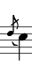 | acciaccatura | Use a LilyPond directive |
| ppp | Pianississimo | na | 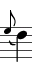 | appoggiatura | Use LilyPond directive |
| mf | Mezzo Forte | na | 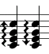 | arpeggio | @ToggleArpeggio@ |
| f | Forte | na |  | downbow | Use LilyPond directive |
| ff | Fortissimo | na | 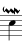 | downmordent | Use LilyPond directive |
| fff | Fortissatissimo | na |  | downprall | Use LilyPond directive |
| sfz | Sfortzando | @ToggleSforzato@ | fermata | Shift Asterisk * | |
 | flageolet | Use LilyPond directive | 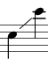 | glissando | Use LilyPond directive |
 | lheel | Use LilyPond directive | 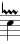 | lineprall | Use LilyPond directive |
 | longfermata | Use LilyPond directive |  | ltoe | Use LilyPond directive |
 | rheel | Use LilyPond directive |  | marcato | Use LilyPond directive |
 | rtoe | Use LilyPond directive |  | mordent | @ToggleMordent@ |
 | shortfermata | Use LilyPond directive | | open | |
| signumcongruentime | Use LilyPond directive |  | portato | Use LilyPond directive | |
| staccato | @ToggleStaccato@ | @TogglePrall@ | |||
 | stacctissiimo | Ctrl Alt . period | 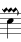 | pralldown | Use LilyPond directive |
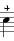 | stopped | Use LilyPond directive |  | prallmordent | Use LilyPond directive |
 | tenuto | @ToggleTenuto@ |  | @TogglePrallPrall@ | |
 | thumb | Use LilyPond directive | 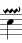 | prallup | Use LilyPond directive |
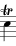 | trill | @ToggleTrill@ | reverseturn | Use LilyPond directive | |
 | @ToggleTurn@ | @ToggleTurn@e |  | @ToggleUpprall@ | Use LilyPond directive |
 | upbow | Use LilyPond directive |  | verylongfermata | Use LilyPond directive |
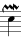 | upmordent | Use LilyPond directive | @ToggleBeginSlur@ |
To add an expression to notation as you type, just enter the note pitch and duration you want and immediately afterwards the expression you want from the menu Expression Marks. As always, you can assign shortcuts to expression marks you frequently use. To add expressions after you have already added notes, position the cursor at the note you want to add an expression to. You won't need to be exactly on the note to add expressions especially at the end of a measure.

Look at Example 1, “”, we see a short musical expression. Lets add the expressions:
Using the keyboard shortcuts enter the low b. (the b on the keyboard and a space)
Type the g (the g on the keyboard and a space)
Type in your keybinding for a inserting a mordent, a mordent above the g.
Note Denemo won't place expressions optimally, don't worry it will display correctly in the final published output.
Type the second g the same way you did in the previous step.
Type the a and g eighth notes
Type two a quarter notes
Type in your keybinding for inserting trills, a trill will appears above the a.
Type an a quarter note.
Type a tilde keybinding, a turn appears above the final a quarter note.
Type the final b and c eighth notes.
Procedure 4. Adding Expressions using the Articulation palette

Look at Example 2, “”, we see a dialog with expression symbols. Lets add the expressions to our notes:
Add the notes to the staff as documented in the last section
Click on the note that will have the expression assigned to it then click on the desired expression in the expression palette. This will place the expression symbol above or below then note.
To add Repeats to scores using Denemo:
Repeat barlines can be added using Other-\>Insert/Edit LilyPond, the LilyPond directive \bar ":|" adds an end repeat, for example. See LilyPond docs for further examples, or explore the templates.
Midi playback. Denemo uses external midi player to play back your score. You can choose which program to use as follows. Go to the Playback menu and choosePlayback Properties and Externals tab. In the External Midi Player text box enter the name of your midi player. When you click on the Play item of the toobar the current movement is played starting from the measure with the cursor in it. If there is a selection then the measures containing the selection are played, otherwise play continues until you click stop or the movement ends. While playing, the music scrolls automatically so that you can watch and either bookmark or stop the music if you hear something you want to re-visit. You can make corrections to the synchronism by using the measure forwards or backwards keypresses (usually bound to Ctrl right/left arrow). This automatic scrolling is turned off if you explicitly set the range of measures in the Playback->Playback Properties dialog
In addition to permitting midi playback, Denemo permits playback using csound. Denemo will play your file with a .orc file. In the playback properties make sure the command: csound -d -W is set. Next use the navigation box to choose your .orc file. Denemo will soon come with a few demo .orc files which you will find in XXX. The csound module of Denemo is currently under construction.
Creating scores with Denemo is quick and easy. Click on Print, and in the PDF viewer choose print.
This section will explain how to enter advanced rhythms, chords polyphony etc
Display Command. Control-Shift-left: Decrease the minimum display width of all measures by 10 pixels Control-Shift-right: Increase the same by 10 pixels Control-Shift-up: Decrease vertical space alloted to each staff by 10 pixels Control-Shift-down: Increase vertical space alloted to each staff by 10 pixels
Tuplets can be entered using the Tuplets menu on the Menu of Objects, or the old method described below
LilyPond treats tuplets as fractions with the top (numerator) signifying the amount of notes normally displayed and the denominator the amount of notes to be displayed instead. If this sounds confusing for musicians raised on triplets, pentuplets etc., it is. So Denemo has simplified this by permitting you to use the triplet name to lay them down easily, it also lets you create custom tuplets if you so desire.
Table 2.
| Tuplet | Shortcut | Tuplet | Shortcut |
|---|---|---|---|
| Duplet | 2 | Triplet | 3 |
| Quadruplet | 4 | Pentuplet | 5 |
| Sextuplet | 6 | Septuplet | 7 |
| Octuplet | 8 |
Table 2, “” lists the keyboard shortcut for adding tuplets in Denemo. To add tuplets do the following:
Place the cursor in the place you want to add the tuplet.
Type the number corresponding to the tuplet you want to enter. (For instance a 3 for a tuplet). The tuplet boundary markers "~" and "|" appear at the top of the staff. The cursor is placed between, which is where your triplet should go. Tuplets can be selected and made into custom rhythms for easier entry. See (out of date image) Figure 4, “Tuplet Markers”
Enter the pitches and durations of the tuplet using the pitch names (a, b, c, d, etc.) and the duration keybindings.
Next with the l key move the cursor after the Tuplet End marker.
Denemo has a variety of features to speed editing. To ease correction of notes us Edit Mode. You can position the cursor on any note in a chord and change its pitch, accidental, octave using the keypresses assigned to the standard actions.
To edit quickly in Denemo use the following keyboard shortcuts:
Table 3.
| Command | Function | Comment |
|---|---|---|
| m | Add a new measure to all staves at the current cursor position | |
| Ctrl up | Switch to the staff above the current staff | |
| Ctrl down | Switch to the staff below the current staff | |
| Ctrl C | Copy selection to the Clipboard but leave the area selected | |
| Ctrl X | Copy the area between the mark point and the current cursor location to the paste buffer and clear the selection | |
| Ctrl V | Paste the buffer at the current cursor position |
To perform common editing tasks the procedure is as follows:
Move the cursor to the beat within the measure you want to edit.
Lasso the notes you want to edit: Select the section with the left mouse button or use the selection keybinds in combination with the navagation keybindings to increase or decrease size of selection.
Next type the command you want to perform, such as copy Ctrl c or cut Ctrl x
Navigate to the measure you want to paste the section in the clipboard and type Ctrl v to paste in the notes from the clipboard.
Piano staffs, and staff groups can be created using the context field of the score->properties dialog. You can set a piano staff within a staff group by setting successively the StartPiano and StartGroup contexts on a single staff, or more generally setting StartPiano, EndPiano on adjacent staffs within a staff group.
| Note |
|---|---|
| It is possible to set silly combinations – some will not print anything. Check that you have a Start and End staff for each type and that they are not miss-matched. |
Denemo permits the use of mutiple staves for part work, as well as enabling multiple voices on a single staff. To add voices to the current staff do the following:
Go to the measure(s) where you want to add the second voice
Use .Then open the staff properties. This dialog box will appear.

If this is a different instrument than the other voice, open the instrument drop down list and choose the appropriate instrument. The default name for this voice should be ok.
Click Ok to close the dialog box.
To switch voices use VoiceDown, VoiceUp under staff menu. or using the keyboard shortcuts
Note The stem positioning positioning may not look correct in the Denemo window, but it will look correct in the printed output.
For every beat your voice is silent you need to add a null note, which is achieved with the following sequence of key strokes: 1. n puts you in null mode, 2. r toggles a rest 3. then type the rest value you need to add, with the appropriate key binding.
For the beats that contain notes just enter them as you would normally see section x.
Note If you choose not to enter rests in null mode the visual output will be the same but these notes will be heard during midi playback of your score.
To leave the new voice and return to the previous one type
.
Choose Other->Enter Lyrics.
| Note |
|---|---|
| you must provide a lyric for each note. |
The Extend Syllable and Center check boxes are not documented, but you can use double hyphen “–“ and double underscore “__” respectively for these (as described in the LilyPond documentation for syllables and extenders). You can also cut and paste lyrics into a specially written lyricmode block in the LilyPond window and use a custom score block to place it under the music. In this way multiple verses are possible.
To enter figures choose Other->Insert/Enter figured bass. There are some shortcuts that enable all the work to be done with the numeric keypad. A brief summary is given by right clicking the option. The conventions are described in the LilyPond docs.
To enter chord symbols choose Other->Insert/Enter chord symbols. A brief summary is given by right clicking the option. The conventions are described in the LilyPond docs.